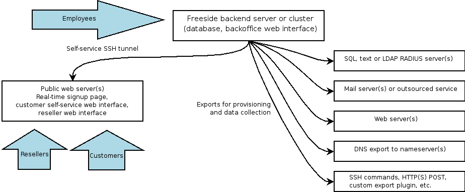

Freeside Documentation

Installation and upgrades
New Installation
Installing integrated RT ticketing
Signup/Self-service installation
Upgrading from 1.5.8 or 1.6.X
Configuration and setup
Administration
Exports
Billing
Developer
Schema reference
Perl API
Importing legacy data